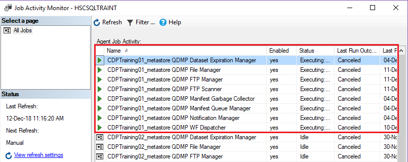
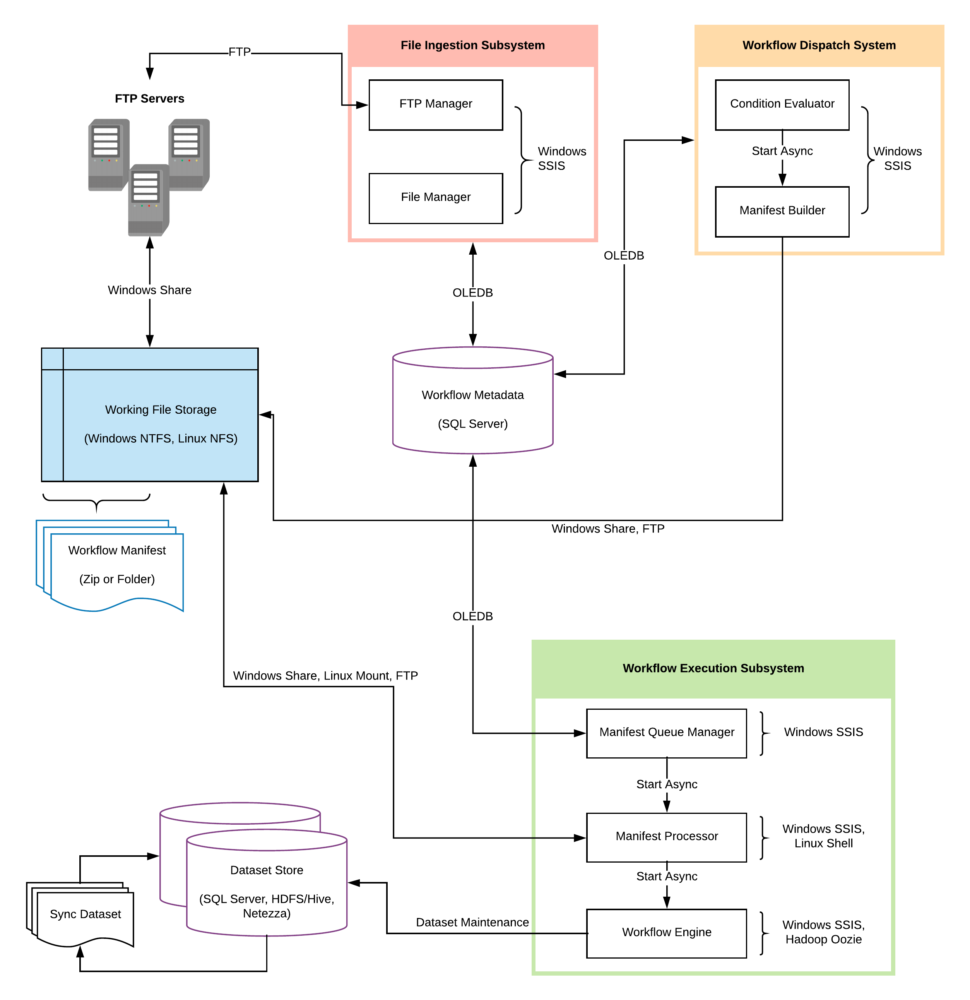

Execution Sequence¶
We shall now see how Quaero CDP executes workflows and performs operations on data and also how the entire system works together by orchestrating the various components
CDP Daemons¶
Jobs¶
In database engineering terms, a job is a background process that is executed by an SQL Agent in SQL Server. The agent is responsible for scheduling jobs and handles other automated tasks. Jobs may involve the running of queries or execution of SSIS packages.
Daemon¶
In database engineering terms, a job is a background process that is executed by an SQL Agent in SQL Server. The agent is responsible for scheduling jobs and handles other automated tasks. Jobs may involve the running of queries or execution of SSIS packages.
CDP Daemons¶
The CDP Environment also has multiple daemons and jobs running in the background. The following figure shows a snapshot of Job Activity Monitor in the CDP Environment. It can be viewed through SQL Server Management Studio.
{kind=link}
| Daemon Job | Purpose |
|---|---|
| FTP Scanner | Checks for file availability and inserts tacking data |
| FTP Manager | Downloads (ingests) the “Ready” files into RECEIVE folder |
| File Manager | Performs operations like zipping/unzipping, moving files into work folder, inserting metadata for processing the file. |
| Manifest Queue Manager | Manifests are queued for execution after being built |
| Workflow Dispatcher | Constantly evaluates dispatch condition of all “READY” workflows and executes (dispatches) them when conditions are met. |
| Notification Manager | Responsible for sending mails, error logs, and other notifications |
| Dataset Expiration Manager | Drops/Truncates tables that are expired during routine cleanup |
| Manifest Garbage Collector | Deletes manifests of workflows whose status is “PendingCleanup” |
The QCDP Execution System¶
There are three main subsystems that make up the whole of QCDP:
- File Ingestion Subsystem
- Workflow Dispatch Subsystem
- Workflow Execution Subsystem
File Ingestion Subsystem¶
Danger
This section (File Ingestion Subsystem) is yet to be reviewed by technical experts and so any information here may be fully or partially incorrect. It is therefore advised that this information should not be used in Project implementation and other actions that depend on the accuracy of this information
The purpose of this subsystem is to recognize the availability of new data files and ingest them into the QCDP workflow system. This includes operations such as interacting with internal and external FTP sites, AWS, Google Cloud Store or even External API , downloading, decrypting, decompressing (e.g. unzipping) files and cataloging them in the workflow metadata as datasets (or dataset instances to be precise).
FTP Scanner¶
- This job periodically checks for the availability of the new files in the specified FTP/FTPS/SFTP site.
- The interval is specified by
SOURCE_SYSTEM_TIME_BETWEEN_SCAN_SECS. - Location of the FTP server such as host name username, password and other attributes are specified in the
M_SOURCE_SYSTEMmetastore table and at every interval performs a login and scans the folders - The FTP Scanner iterates through all the files and adds the tracking information in the
M_TRACK_FTPtable. - If a file was already ingested, the corresponding file’s STATUS attribute is set to
Previously Received. If the file is new and it is about to be ingested, it is set toReady. After ingestion, the status is set toPreparation Complete - If the file has already been ingested the scanner adds another record, sets status to
Previously Receivedand proceeds to read the next file, or the job “sleeps” until the next scheduled run.
FTP Manager¶
- The FTP manager constantly checks the
M_TRACK_FTPtable for any new files that are in theReadyStatus. - The FTP manager then performs the downloading of the ready files into the RECEIVED folder. It later adds metadata record about the file into the
M_TRACK_FILEtable, such as creation date, file name, file size and status. - When the download completes successfully the
M_TRACK_FILE STATUSattribute is set toReceivedandM_TRACK_FTP STATUSis set toPreparation Complete
File Manager¶
- The file manager job constantly checks the received folder for any files that were downloaded.
- If any files were found, the
M_SOURCE_ENTITYtable is checked for theUNIZIP_FILE_FLG. If its set to 1, unzipping is performed by the file manager using the password specified inUNZIP_FILE_PASSWORD, unless it isNULL. - If any file manager operation fails such as unzipping or wrong password, log entries are made whose location is specified in
LOG_FILE_DIRECTORYattribute ofM_SOURCE_SYSTEMtable - After extraction is complete (if required), the final file is moved to the WORK directory whose path is specified by the WORK_DIRECTORY attribute in
M_SOURCE_SYSTEMtable. - Finally, metadata about the file is added to
M_TRACK_DATASET_INSTANCEfor processing
Workflow Dispatch System¶
The purpose of this subsystem is to evaluate workflow conditions and dispatch workflows to the appropriate workflow execution subsystem when they meet the pre-defined conditions. This involves evaluation of schedule and dataset state conditions, packaging and transmission of workflow definition files and optionally, data files to the target workflow execution subsystem.
- Condition Evaluator
- The condition evaluator component is responsible for constantly checking workflows’ conditions.Example, the condition evaluator checks all Active workflows to see if their dispatch conditions are met. If they return true, the workflow execution subsystem begins the execution of the workflowThe conditional evaluator also has other condition types such as System Conditions, time window conditions, and custom user-conditions.
This section will be updated when further information is available. Please check back later
Workflow Dispatch System¶
The purpose of this subsystem is to execute workflows, consuming input datasets and creating output datasets, both of taking the form of files or tables. It is also responsible for synchronizing datasets between disparate data storage environments; for example, Hadoop Hive, Netezza and SQL Server
This section will be updated when further information is available. Please check back later